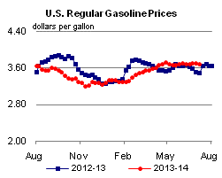
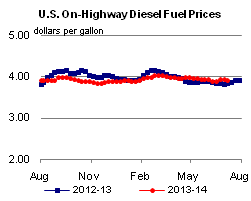
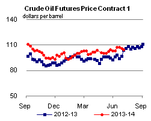
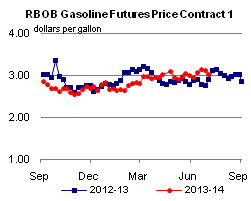
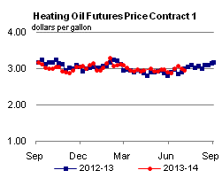
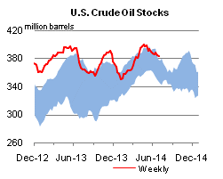
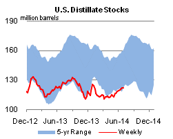
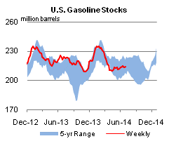
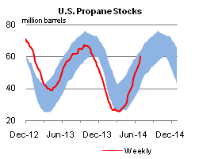

Unrest in Iraq prompts EIA's July Short-Term Energy Outlook to reduce Iraqi oil production growth
Escalating violence in Iraq pushed North Sea Brent crude oil prices to a nine-month high of $115 per barrel (bbl) on June 19. Prices have since fallen to $107/bbl as of July 9, as continued Iraqi crude oil exports have lessened market concerns about an imminent supply disruption. However, the escalation of violence in northern Iraq that started in June has introduced significant uncertainty into the Iraq oil production outlook. In the July Short-Term Energy Outlook (STEO), EIA forecasts Iraqi crude production to average near 3.1-3.2 million barrels per day (bbl/d) throughout the forecast period, which runs through 2015. Compared to the June STEO forecast, EIA has reduced Iraqi production growth in both 2014 and 2015 to take into account recent events, lowering total production by 0.6 million barrels per day (bbl/d) by December 2015. In the updated forecast, monthly Iraqi crude production is not expected to exceed its recent level of 3.3 million bbl/d through the end of 2015.
{kind=link}
The recent unrest has mainly affected the 0.2 million bbl/d of northern Iraqi crude production that supplied the Baiji refinery, Iraq's largest. The Baiji refinery halted operations in June because of fighting at the complex, shutting in northern production of crude. Crude oil production in southern Iraq of 2.8 million bbl/d and in the Iraqi Kurdistan Region of 0.2 million bbl/d has not been disrupted.
About 90% of Iraq's oil production is concentrated in the southern portion of the country and almost all Iraqi exports leave from the southern port of Basra, which is far from current fighting. Following the March bombing of the Kirkuk pipeline between northern Iraq and Turkey, exports of crude oil from northern Iraq fell as exports from the Kirkuk pipeline halted. More recently, northern Iraqi exports have started to return (Figure 1). In June, Kurdish Regional Government exports of Iraqi crude to Turkey averaged roughly 140,000 bbl/d, moving by truck (50,000 bbl/d) and a pipeline (90,000 bbl/d) that came online in late May.
{kind=link}
Until recently, Iraq had provided a stabilizing influence on oil markets, helping offset high levels of OPEC supply disruptions, which exceeded 2.6 million bbl/d in May (Figure 2). Recent production growth caused Iraq to surpass Iran as the second-largest producer in OPEC, after Saudi Arabia. Production in 2014 continued to climb, reaching 3.3 million bbl/d in May, 150,000 bbl/d higher than May 2013, before falling by 0.2 million bbl/d because of the fighting. Iraqi exports followed production higher, averaging 2.5 million bbl/d during the first five months of 2014 - the highest volume in more than three decades (Figure 3).
Asia has been the primary recipient of increasing Iraqi crude exports. During the first five months of 2014, about 60% of Iraq's 2.5 million bbl/d of crude exports supplied Asian markets, with China (25%) and India (20%) the largest customers. The United States was the third-largest importer of Iraqi oil, importing 12%, or around 300,000 bbl/d. U.S. imports of Iraqi crude have historically been concentrated on the Gulf Coast (PADD 3). However, infrastructure improvements and rising U.S. domestic production have reduced demand in the Gulf, shifting Iraqi crude to refiners along the West Coast (PADD 5) (Figure 4).
{kind=link}
Looking ahead, EIA expects Saudi Arabia to maintain a higher production level through 2015 to offset the loss of production growth in Iraq. For 2015, Saudi Arabia's annual production is still projected to decline to accommodate growing output in non-OPEC countries, albeit to a lesser extent than previously forecast because of lower growth in Iraq. As a result, EIA expects OPEC surplus crude oil production capacity, which is concentrated in Saudi Arabia, to average 2.0 million bbl/d in 2014 and 2.7 million bbl/d in 2015, 0.2 million bbl/d and 0.8 million bbl/d, respectively, lower than forecast in last month's STEO. With lower surplus crude production capacity and higher risk of supply disruption in Iraq, EIA forecasts North Sea Brent prices to average $110/bbl in 2014 and $105/bbl in 2015, $2/bbl and $3/bbl higher, respectively, than projected in last month's STEO.
{kind=link}
Gasoline prices mostly lower, diesel fuel prices down nationwide
The U.S. average retail price of regular gasoline decreased three cents this week to $3.68 per gallon as of July 7, 2014, 19 cents more than the same time last year. Prices fell in the Midwest by six cents to $3.61 per gallon, and on the Gulf Coast and East Coast by two cents, to $3.46 per gallon and $3.66 per gallon, respectively. West Coast prices increased by less than a penny, remaining at $4.04 per gallon, and prices in the Rocky Mountains rose by one cent to $3.64 per gallon.
The national average diesel fuel price decreased by a penny to $3.91 per gallon, nine cents more than the same time last year. Prices decreased in all regions of the country. The Midwest, Gulf Coast, and Rocky Mountain prices all decreased by one cent, to $3.86, $3.80, and $3.91 per gallon, respectively. Prices on the East and West Coasts fell by less than a cent, remaining at $3.98 and $4.07 per gallon, respectively.
Propane inventories continue to rise
U.S. propane stocks increased by 3.8 million barrels last week to 60.1 million barrels as of July 4, 2014, 2.7 million barrels (4.7%) higher than a year ago. Gulf Coast inventories increased by 1.9 million barrels and Midwest inventories increased by 1.4 million barrels. East Coast inventories increased by 0.5 million barrels while Rocky Mountain/ West Coast inventories remained unchanged. Propylene non-fuel-use inventories represented 7.0% of total propane inventories.
Text from the previous editions of This Week In Petroleum is accessible through a link at the top right-hand corner of this page.
|  |  | ||||||
| Retail Data | Change From Last | Retail Data | Change From Last | ||||
| 07/07/14 | Week | Year | 07/07/14 | Week | Year | ||
| Gasoline | 3.678 | Diesel Fuel | 3.913 | ||||
|  |  | ||||||||||||||||||||||||||
|
 | ||||||||||||||||||||||||||
| *Note: Crude Oil Price in Dollars per Barrel. | |||||||||||||||||||||||||||
|  |  | ||||||
|  |  | ||||||
| Stocks Data | Change From Last | Stocks Data | Change From Last | ||||
| 07/04/14 | Week | Year | 07/04/14 | Week | Year | ||
| Crude Oil | 382.6 | Distillate | 121.8 | ||||
| Gasoline | 214.3 | Propane | 60.073 | ||||